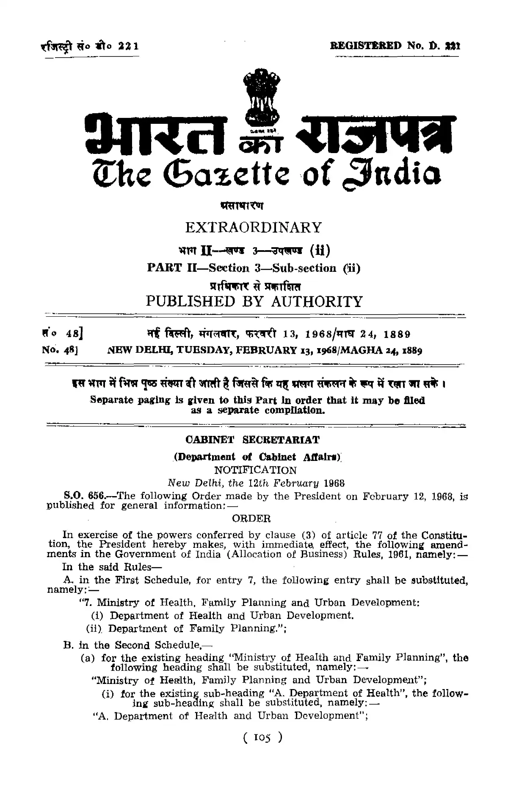
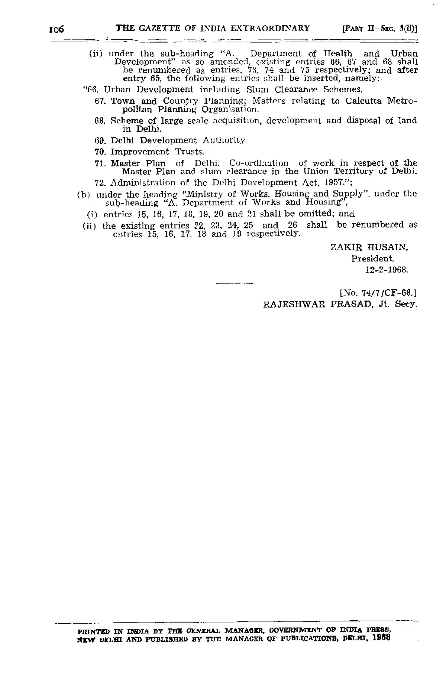

Amendment #65 (S.O. 656, 1968)
13 changes: 1 to the First Schedule, 12 to the Second Schedule. 13 applied
What it did to the ministries
- moved7 subjects move from Ministry of Works, Housing & Supply to Ministry of Health, Family Planning and Urban Development change 1, 2, 3, 4, 5, 6 · histories: Supply, Health and Family Planning, and Works Housing & Urban Development
- renamedMinistry of Health & Family Planning is renamed Ministry of Health, Family Planning and Urban Development change 1, 2, 3, 4, 5, 6 · histories: Health and Family Planning, and Works Housing & Urban Development
The order, page by page
Page 1 of 2

123Schedule 1 › entry 7
- 7. Ministry of Health, Family Planning and Urban Development :
- i. Department of Health and Urban Development.
- ii. Department of Family Planning.
applied at schedule 1 › ministry 7 in the Rules after #65
Schedule 2 › Ministry of Health and Family Planning
- Ministry of Health, Family Planning and Urban Development
applied at schedule 2 › ministry Ministry of Health, Family Planning and Urban Development in the Rules after #65
Schedule 2 › Ministry of Health, Family Planning and Urban Development › Department of Health
- A. Department of Health and Urban Development
applied at schedule 2 › ministry Ministry of Health, Family Planning and Urban Development › department A in the Rules after #65
Page 2 of 2

45678910111213Schedule 2 › Ministry of Health, Family Planning and Urban Development › Department of Health and Urban Development › entry 66
renumbered as 73
applied at schedule 2 › ministry Ministry of Health, Family Planning and Urban Development › department A › group_heading IV ›… in the Rules after #65
Schedule 2 › Ministry of Health, Family Planning and Urban Development › Department of Health and Urban Development › entry 67
renumbered as 74
applied at schedule 2 › ministry Ministry of Health, Family Planning and Urban Development › department A › group_heading IV ›… in the Rules after #65
Schedule 2 › Ministry of Health, Family Planning and Urban Development › Department of Health and Urban Development › entry 68
renumbered as 75
applied at schedule 2 › ministry Ministry of Health, Family Planning and Urban Development › department A › group_heading IV ›… in the Rules after #65
after Schedule 2 › Ministry of Health, Family Planning and Urban Development › Department of Health and Urban Development › entry 65
- 66. Urban Development including Slum Clearance Schemes
- 67. Town and Country Planning; Matters relating to Calcutta Metropolitan Planning Organisation.
- 68. Scheme of large scale acquisition, development and disposal of land in Delhi.
- 69. Delhi Development Authority.
- 70. Improvement Trusts.
- 71. Master Plan of Delhi. Co-ordination of work in respect of the Master Plan and slum clearance in the Union Territory of Delhi.
and 1 more
- 72. Administration of the Delhi Development Act, 1957.
applied at schedule 2 › ministry Ministry of Health, Family Planning and Urban Development › department A › group_heading IV ›… in the Rules after #65
Schedule 2 › Ministry of Works, Housing and Supply › Department of Works and Housing › entry 15; Schedule 2 › Ministry of Works, Housing and Supply › Department of Works and Housing › entry 16; Schedule 2 › Ministry of Works, Housing and Supply › Department of Works and Housing › entry 17; Schedule 2 › Ministry of Works, Housing and Supply › Department of Works and Housing › entry 18; Schedule 2 › Ministry of Works, Housing and Supply › Department of Works and Housing › entry 19; Schedule 2 › Ministry of Works, Housing and Supply › Department of Works and Housing › entry 20; Schedule 2 › Ministry of Works, Housing and Supply › Department of Works and Housing › entry 21
applied at schedule 2 › ministry MINISTRY OF WORKS, HOUSING & SUPPLY › department A › entry 15 in the Rules after #65
Schedule 2 › Ministry of Works, Housing and Supply › Department of Works and Housing › entry 22
renumbered as 15
applied at schedule 2 › ministry MINISTRY OF WORKS, HOUSING & SUPPLY › department A › entry 15 in the Rules after #65
Schedule 2 › Ministry of Works, Housing and Supply › Department of Works and Housing › entry 23
renumbered as 16
applied at schedule 2 › ministry MINISTRY OF WORKS, HOUSING & SUPPLY › department A › entry 16 in the Rules after #65
Schedule 2 › Ministry of Works, Housing and Supply › Department of Works and Housing › entry 24
renumbered as 17
applied at schedule 2 › ministry MINISTRY OF WORKS, HOUSING & SUPPLY › department A › entry 17 in the Rules after #65
Schedule 2 › Ministry of Works, Housing and Supply › Department of Works and Housing › entry 25
renumbered as 18
applied at schedule 2 › ministry MINISTRY OF WORKS, HOUSING & SUPPLY › department A › entry 18 in the Rules after #65
Schedule 2 › Ministry of Works, Housing and Supply › Department of Works and Housing › entry 26
renumbered as 19
applied at schedule 2 › ministry MINISTRY OF WORKS, HOUSING & SUPPLY › department A › entry 19 in the Rules after #65
How this document was read
From the Government of India (Allocation of Business) Rules, 1961 and their amendments, as published by the Cabinet Secretariat (cabsec.gov.in), read by orgpedia. The readings of the older scanned gazettes have known gaps.